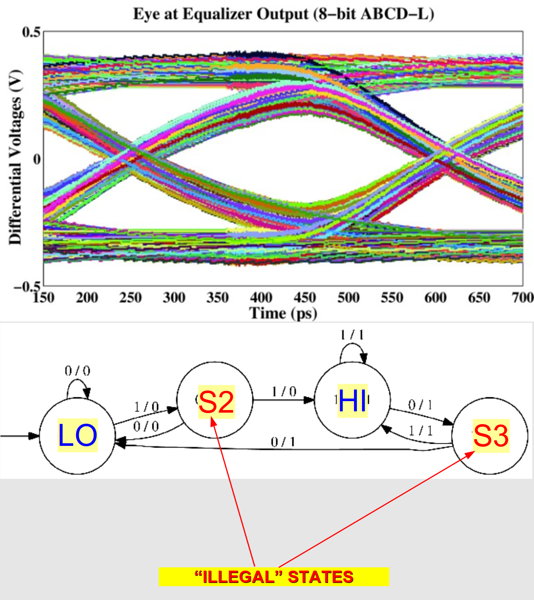
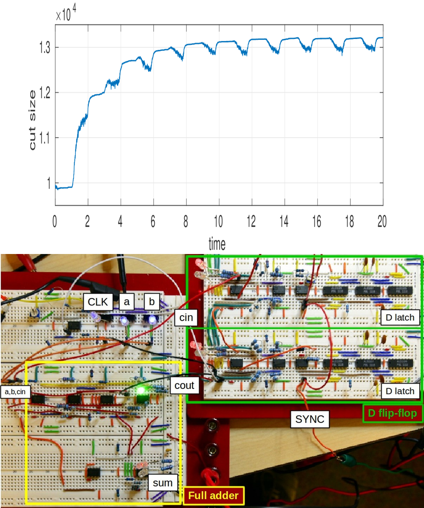
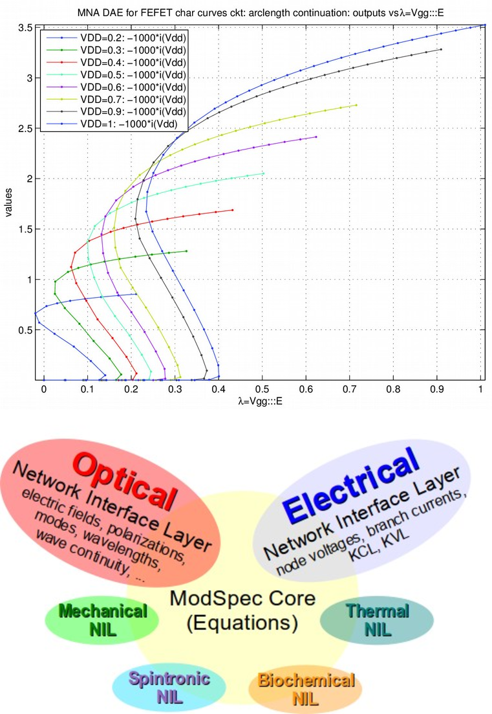
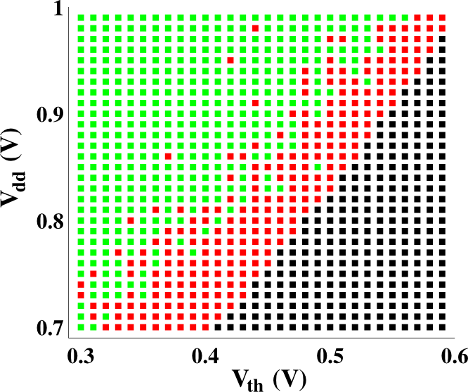

Research in Jaijeet Roychowdhury's group
Our research encompasses:
machine learning techniques and applications for dynamical systems.
next-generation computing schemes.
mathematical formulations, computational algorithms and software tools for designing, understanding, predicting and verifying the behaviour of cyber-physical, electronic, biological and nanoscale systems.
Selected ongoing research projects
ABCD: Accurate Booleanization of Continuous Dynamics
|
 |
ABCD is a suite of machine learning algorithms that captures I/O features of continuous dynamical systems in discrete form.
Being discrete, ABCD-learned models are useful for very fast evaluation and for formal verification.
A key feature of the ABCD approach is that it can capture the effects of continuous-time non-idealities (stemming from nonlinearity, dynamics, variability, etc.) with far higher fidelity than possible by other available techniques.
ABCD-learned models have been demonstrated to simulate orders of magnitude faster than the continuous models they represent, and to locate malfunctions via Boolean verification.
Such models have applications in the design, understanding and verification of cyber-physical (CPS), electronic and biological systems.
The upper figure on the left depicts the accuracy with which an ABCD-learned model predicts the eye opening of a communication system.
The figure overlays the ABCD model's prediction with those of SPICE.
The lower figure on the left depicts the generated FSM of a latch that is clocked too fast for proper operation.
Two extra
“illegal” states indicate improper latching if the data is not stable for 2 or more clock cycles.
More information: Karthik Aadithya's dissertation.
Selected publications: P137, P131, P129, P125 and P115 on our publications page.
|
PHLOGON: Phase Logic using Oscillatory Nanosystems
|
 |
In our PHLOGON project, we have been exploring oscillators for building next-generation computing platforms.
We have shown that Ising machines for solving NP-complete problems can be easily implemented using a variety of oscillator types.
Oscillators can also be used for regular von Neumann style computing, using phase to encode logic.
Phase encoding offers the promise of significantly improved robustness to noise and variability over today's level-based encoding schemes for logical computation.
Oscillators also offers the promise of significantly lower power consumption, through the use of novel nanodevices.
The mechanism underlying the suitability of oscillators for computation is injection locking, familar in many natural and man-made systems – including Huygens’ clocks, biological circadian rhythms, the synchronized flashing of fireflies, frequency-division circuits, etc..
As such, almost any physical oscillator (electronic, mechanical, nanoscale, biological, etc.) is potentially suitable as a substrate for building PHLOGON systems.
The upper figure on the left depicts a PHLOGON Ising machine finding good solutions of the G22 MAX-CUT benchmark problem.
The lower figure is a breadboard implementation of a PHLOGON finite state machine (1-bit serial adder, using a von Neumann architecture) built using CMOS ring oscillators.
More information: Tianshi Wang's research page.
Selected publications: P152, P150, P142, P139, P138, P133 and P124 on our publications page.
|
MAPP: The Berkeley Model and Algorithm Prototyping Platform
|
 |
MAPP is a MATLAB/Octave based platform for quickly prototyping models and analysis algorithms for dynamical systems.
It aims to alleviate a long-standing problem afflicting research in modelling and simulation of continuous systems: the lack of a well-structured infrastructure that is general, comes with standard models and algorithms, is usefully documented, and is easy to use, program in and extend.
MAPP comes with a number of analysis algorithms for solving systems of nonlinear algebraic and/or differential equations, including DC, AC, transient, homotopy, harmonic balance, shooting, variability using polynomial chaos, etc..
It also has specialized algorithms for oscillators, including phase macromodel extraction, Adlerization and injection locking analysis.
A companion tool, VAPP (Verilog-A Parser and Processor) translates Verilog-A model descriptions into MAPP's native model format (ModSpec).
MAPP is designed for user-extensible multi-physics support and is suitable for CPS, electronic, bio-chemical, optical, mechanical, thermal, spintronic and other application domains.
The upper figure on the left depicts folding voltage-current characteristic curves of a ferroelectric FET device, obtained using MAPP's homotopy analysis.
The lower figure is a depiction of the structuring of ModSpec, MAPP's model description format.
More information: MAPP on github, VAPP on github.
Selected publications: P147, P146, P144, P143, P141, P139, P135, P126 and P122 on our publications page.
|
▼ Click on the arrow for more
Predicting the Impact of Random Telegraph Noise on SRAMs, oscillators and PLLs
|
 |
Random Telegraph Noise (RTN) has become of significant concern in nanoscale CMOS technologies. We have developed algorithms
resulting in two tools, SAMURAI and MUSTARD, that enable the accurate prediction of circuit-level impacts of RTN, taking into
account its non-stationary temporal nature.
The figure on the left shows the impact of RTN on a 6T SRAM cell in the presence of threshold voltage and supply variability,
as predicted by MUSTARD.
The red dots depict SRAM designs that would function correctly in the absence of RTN, but fail in its presence.
Selected publications:
P117 and
P119
on our publications page.
|
|
{kind=link}
{kind=link}
{kind=link}
{kind=link}